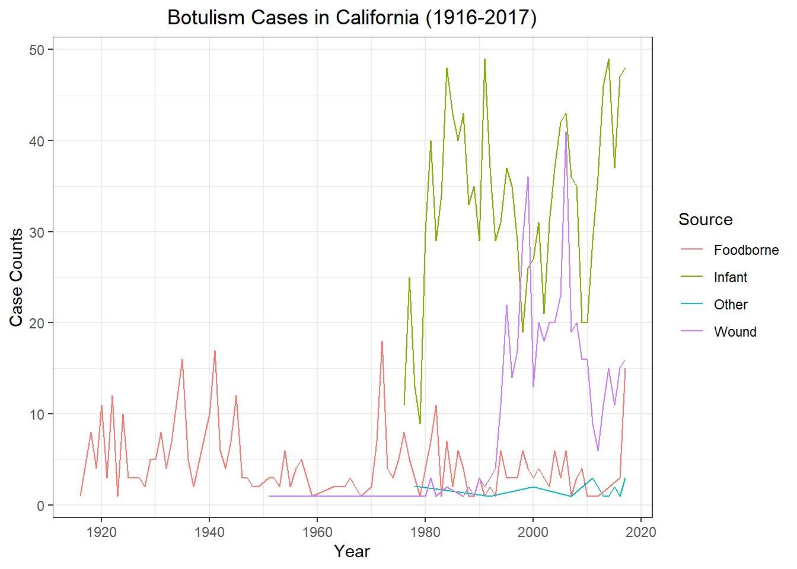
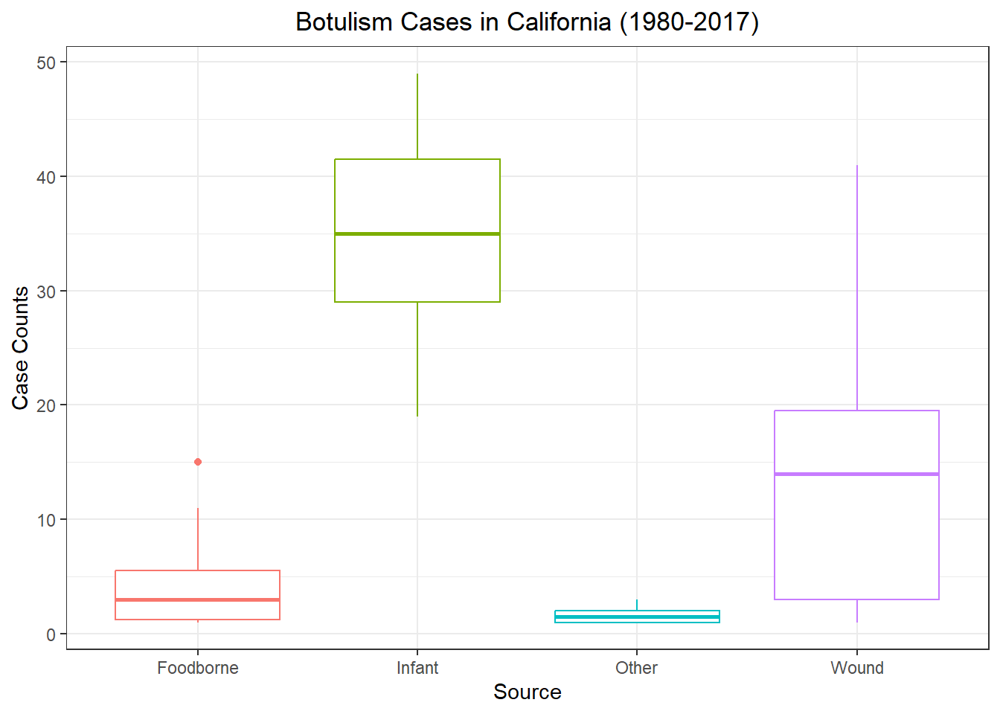
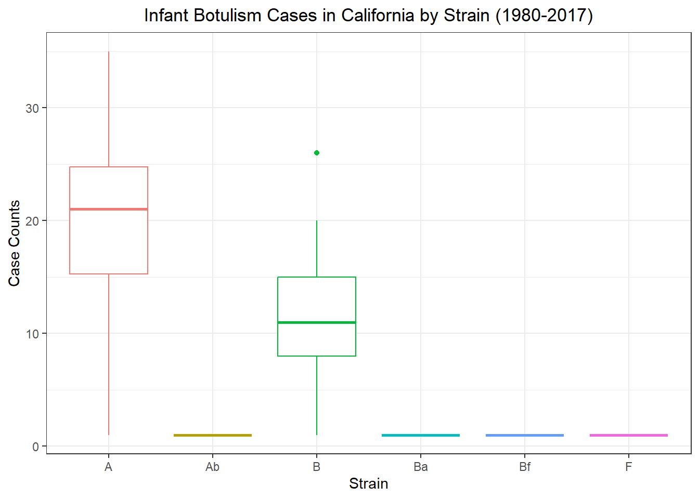

The data set selected for this exercise was retrieved from the CDC data page and contains historic data on Botulism cases throughout the United States by year, case count, “BotType” (source), and “ToxinType” (strain). The raw data contains 2280 observations of 5 variables. Instead of utilizing an “NA” for missing data, “Unknown” was used. For the purpose of this exercise, I altered the “Unknown” character to reflect “NA” and omitted the NAs (a total of 403 rows were omitted). I also standardized the column name “BotType” and “ToxinType” to “Source” and “Strain”, respectively. To parce the data down even further, I selected two states to evalutate; California and Georgia.
Loading packages
library(readr)
Warning: package 'readr' was built under R version 4.2.2
Rows: 2280 Columns: 5
── Column specification ────────────────────────────────────────────────────────
Delimiter: ","
chr (3): State, BotType, ToxinType
dbl (2): Year, Count
ℹ Use `spec()` to retrieve the full column specification for this data.
ℹ Specify the column types or set `show_col_types = FALSE` to quiet this message.
State Year BotType ToxinType
Length:2280 Min. :1899 Length:2280 Length:2280
Class :character 1st Qu.:1976 Class :character Class :character
Mode :character Median :1993 Mode :character Mode :character
Mean :1986
3rd Qu.:2006
Max. :2017
Count
Min. : 1.000
1st Qu.: 1.000
Median : 1.000
Mean : 3.199
3rd Qu.: 3.000
Max. :59.000
condensed_bot<- dplyr::filter(botulism_na, State %in%c("California", "Georgia"))summary(condensed_bot)
=======
condensed_bot<- dplyr::filter(botulism_na, State %in%c("California", "Georgia"))summary(condensed_bot)
>>>>>>> Stashed changes
State Year Source Strain
Length:296 Min. :1916 Length:296 Length:296
Class :character 1st Qu.:1979 Class :character Class :character
Mode :character Median :1995 Mode :character Mode :character
Mean :1988
3rd Qu.:2007
Max. :2017
Count
Min. : 1.000
1st Qu.: 1.000
Median : 3.000
Mean : 7.774
3rd Qu.:13.250
Max. :40.000
State Year Source Strain Count
Min. 296 1916 296 296 1
1st Qu. character 1978.75 character character 1
Median character 1995 character character 3
Mean 296 1988.09459459459 296 296 7.77364864864865
3rd Qu. character 2007 character character 13.25
Max. character 2017 character character 40
data<-readRDS("dataanalysis-exercise/Data/Clean Data/Botulism.RDS") #Loading in condensed_bot data from Kim
=======
data<-readRDS("dataanalysis-exercise/Data/Clean Data/Botulism.RDS") #Loading in condensed_bot data from Kim
>>>>>>> Stashed changes
Wrangle Data
<<<<<<< Updated upstream
data2<- data %>%select(Year, Count,State, Source) #Getting rid of Strainscase_tot<- data2 %>%#This creates a column with the total counts per year instead of separating it by strain. This omits the issue of having multiples of the same year for counts. group_by(Year, State, Source) %>%summarize_if(is.numeric, sum) %>%ungroup()
=======
data2<- data %>%select(Year, Count,State, Source) #Getting rid of Strainscase_tot<- data2 %>%#This creates a column with the total counts per year instead of separating it by strain. This omits the issue of having multiples of the same year for counts. group_by(Year, State, Source) %>%summarize_if(is.numeric, sum) %>%ungroup()
California appears to have a wider range of data collected (across years and different sources). Let’s focus on this State
Let’s look at Botulism counts in California by Source
<<<<<<< Updated upstream
ca %>%ggplot() +geom_line(aes(x = Year,y = Count,color = Source)) +theme_bw() +labs(x ="Year",y ="Case Counts",title ="Botulism Cases in California (1916-2017)") +theme(plot.title =element_text(hjust =0.5))
=======
ca %>%ggplot() +geom_line(aes(x = Year,y = Count,color = Source)) +theme_bw() +labs(x ="Year",y ="Case Counts",title ="Botulism Cases in California (1916-2017)") +theme(plot.title =element_text(hjust =0.5))
>>>>>>> Stashed changes

It wasn’t until the 1970’s that other sources of botulism, such as infant cases, were being detected (Rosow,2015) Let’s look at 1980-2020
Botulism Cases in California (1980-2017)
<<<<<<< Updated upstream
ca %>%filter(Year %in% (1980:2020)) %>%ggplot() +geom_boxplot(aes(x = Source,y = Count,color = Source)) +theme_bw() +labs(y ="Case Counts",title ="Botulism Cases in California (1980-2017)") +theme(plot.title =element_text(hjust =0.5),legend.position ="none")
=======
ca %>%filter(Year %in% (1980:2020)) %>%ggplot() +geom_boxplot(aes(x = Source,y = Count,color = Source)) +theme_bw() +labs(y ="Case Counts",title ="Botulism Cases in California (1980-2017)") +theme(plot.title =element_text(hjust =0.5),legend.position ="none")
>>>>>>> Stashed changes

Infant cases seem to be the most common. Looking into this, infants are at a higher risk due to their weakened immune system, lack of gastric acidity, and a diminished bacterial flora(Van Horn, 2022). Let’s go back to the strain data and see which strains are most common in infants
Infant Botulism Cases in California by Strain (1980-2017)
<<<<<<< Updated upstream
data %>%filter(Year %in% (1980:2020), Source %in%"Infant") %>%#Taking original dataset and filtering for 1980-2017 and for infant sourcesggplot() +geom_boxplot(aes(x = Strain,y = Count,color = Strain)) +theme_bw() +labs(y ="Case Counts",title ="Infant Botulism Cases in California by Strain (1980-2017)") +theme(plot.title =element_text(hjust =0.5),legend.position ="none")
=======
data %>%filter(Year %in% (1980:2020), Source %in%"Infant") %>%#Taking original dataset and filtering for 1980-2017 and for infant sourcesggplot() +geom_boxplot(aes(x = Strain,y = Count,color = Strain)) +theme_bw() +labs(y ="Case Counts",title ="Infant Botulism Cases in California by Strain (1980-2017)") +theme(plot.title =element_text(hjust =0.5),legend.position ="none")
>>>>>>> Stashed changes

Strain A seems to be the most prevalent in infants followed by Strain B. This can be confirmed at https://www.infantbotulism.org/readings/ib_chapter_6th_edition.pdf